Using (and Abusing) Japanese Characters
In Design
— A Primer
Craig Ede
September 10-11, 2011, BarCamp Brighton
http://sushifox.co.uk/japantalk/
HTML5 slideshow code provided by Google :D
日本
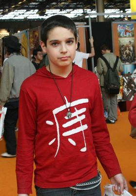
Source: hanzismatter
Source: hanzismatter
Why are Japanese Characters Popular?
-
Aesthetically pleasing shapes
-
"Foreign" ∴ intriguing, "not the norm" (Orientalism)
-
Japanese culture is popular in the West (manga, anime)
Source: Engrish.com
Source: Engrish.com
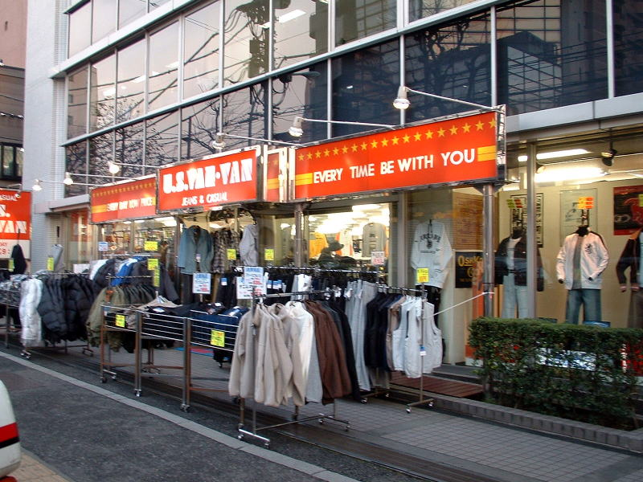
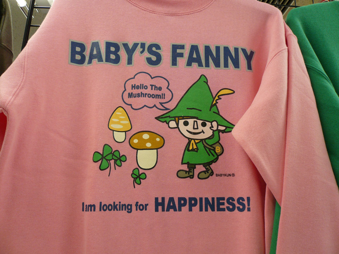
Source: Taken by author, Tokyo 2006
Source: hanzismatter
Source: hanzismatter
"But they're just for decoration ..."
-
Meaning will be conveyed, whether you like it or not
→ Japanese characters are inherently meaningful
-
Target market probably more likely to notice than average person
-
Social media → mistakes are unlikely to stay unnoticed
-
Possibility of serious ramifications, causing offense, esp. given Japanese culture
→ Potential exists for embarrassment/brand damage
This Talk:
-
Introduces basics of the Japanese language/writing system
-
Examines pitfalls of using Japanese characters in design
-
Suggests best practices for employing Japanese characters as design elements/"capturing the Japanese aesthetic"
Japanese Character Types
HIRAGANA — ひらがな
Hiragana is a phonetic script. Characters are "swirly", made of curves and loops.
Hiragana is used for:
-
Some simple, common Japanese words
→
りんご
ringo
apple
-
Suffixes (okurigana) and particles (joshi):
→
私の新しい車は赤いです。
→
私の新しい車は赤いです。
KATAKANA — カタカナ
Phonetic, like hiragana. Characters are more "angular."
Katakana is used for:
-
Transliterations of foreign words/names
→
マイケル
maikeru
Michael
-
Loanwords (gairaigo)
→
アルバイト
arubaito
Part-time work (Ger: Arbeit)
-
Japanese words formed from English words (wasei-eigo)
→
リモコン
rimokon
remote control
KANJI — 漢字
Borrowed from China. Major semantic units of written language. Broadly, kanji represent "words/concepts".
Kanji are pronounced differently depending on where they appear:
-
On their own, representing Japanese words
→
飛ぶ
tobu
to fly
-
As part of "Chinese-style" compounds:
→
飛行機
hikōki
aeroplane
Important Features of Japanese
1) You cannot write Japanese phonetically
Japanese text doesn't have spaces between words
This is where kanji become very important, as they provide "anchor/break points" in sentences.
Sothelanguageiseffectivelywrittenlikethis.
Japanese people cannot understand text written phonetically.
∴ Knowing how to say something in Japanese doesn't mean you can write it!
2) Machine translators miss context
Japanese is context-based/dependent
A: 田中さんはいますか。
B: 用事があるから明日来ますよ。
A: Is [Mr?] Tanaka here?
B: [He] has things to do, so [he'll] come tomorrow.
Topic particle has set contextual topic, so subsequent sentences don't include pronouns/etc. that would appear in English.
Machine translators do not usually account for this!
How Not to Use Japanese Characters
1) Nonsense characters
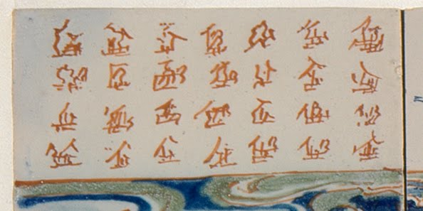
Source: hanzismatter
2) Broken characters
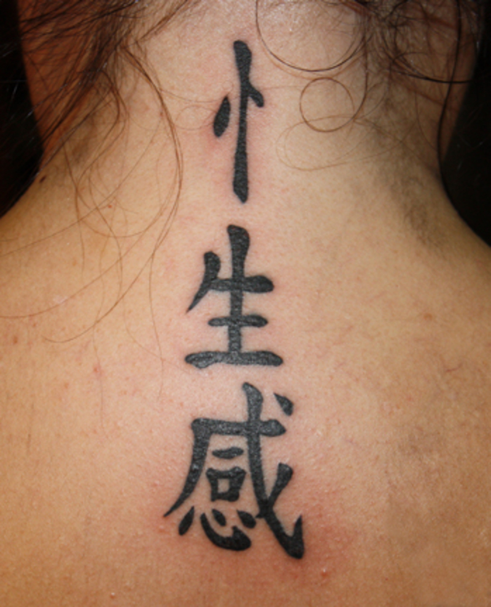
性感 seikan is two characters
Source: hanzismatter
3) Badly drawn characters
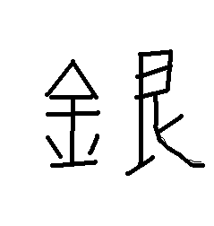
4) Inappropriate fonts
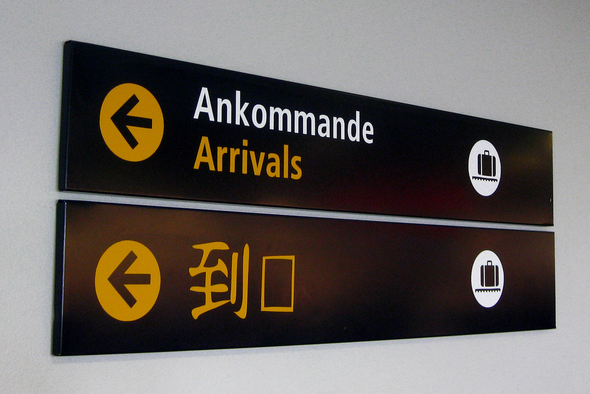
到着 tōchaku — first kanji in bizarre font, second missing
Source: hanzismatter
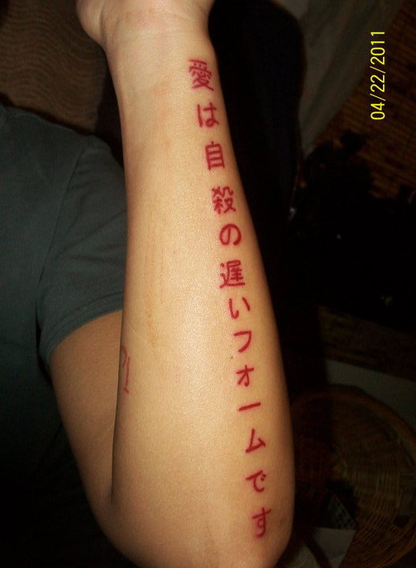
Default sans-serif font; like getting a tattoo in Arial
Source: hanzismatter
5) Flipped/upside down characters
Photo has been reversed — all characters are backwards
Source: hanzismatter
6) "Japanese-style" fonts
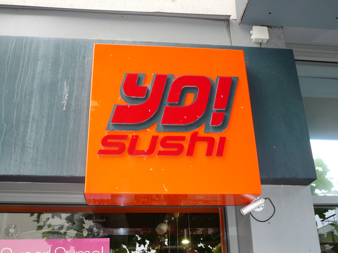
Source: Taken by author, Brighton 2011
7) Homophones with different kanji
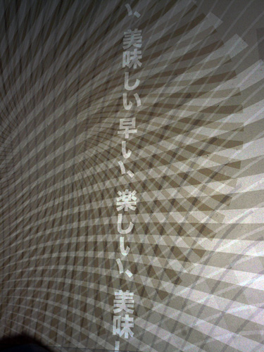
早い、楽しい、美味しい hayai, tanoshii, oishii
Source: Taken by author, Brighton 2011
速い hayai fast, quick
早い hayai early (i.e. before expected, early in the day)
速い、楽しい、美味しい hayai, tanoshii, oishii
→ "Fast, Fun and Delicious"
早い、楽しい、美味しい hayai, tanoshii, oishii
→ "Premature, Fun and Delicious"
8) Nonsense phrases
スーパードライ sūpādorai
極度乾燥（しなさい） kyokudo kansō (shinasai)
Source: cult.co.uk
極度 kyokudo extreme degree
乾燥 kansou drying (noun)
乾燥する kansou suru to dry (verb)
しなさい shinasai command form of する
極度乾燥しなさい kyokudo kansō shinasai
→ "I order you to make this garment extremely dry"
How Can Designers Avoid Mistakes?
1) Avoid Japanese characters if possible
Japanese is very different to European languages. If you don't know the language, there are traps everywhere.
If you need to design something in a "Japanese style", there are many ways in which you can do this without using the language:
-
Geometric designs — Japanese graphic design is often less "curvy"; few rounded corners on websites
-
Bold/contrasting colours, simple motifs — look at company logos or prefectural flags
Some examples:
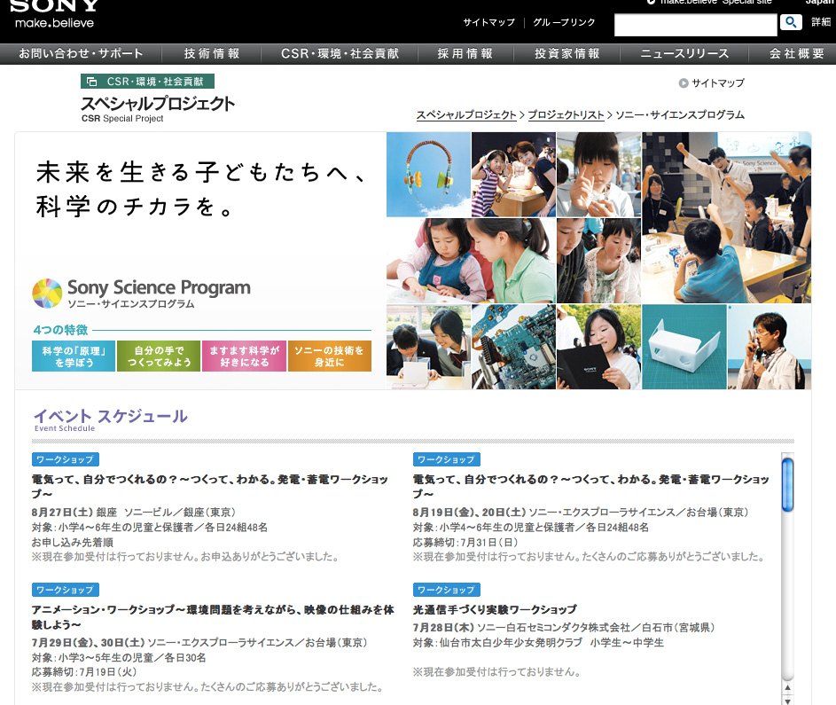
Source: Sony Japan
Flag of Okayama prefecture. Motif is a stylised 岡 (oka)
Source: Wikipedia
-
Delicate, thin lines in strong colours are in vogue in advertising
-
Art styles from Japan — ukiyo-e, Superflat, traditional patterns/mon motifs
Some examples:
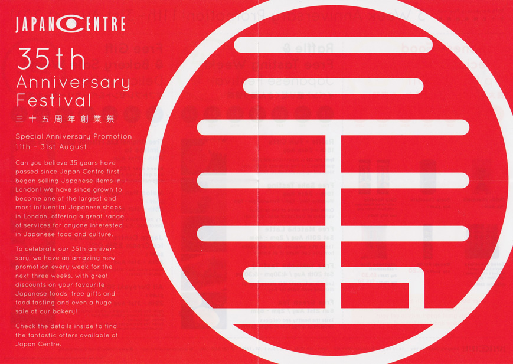
Source: Japan Centre, London
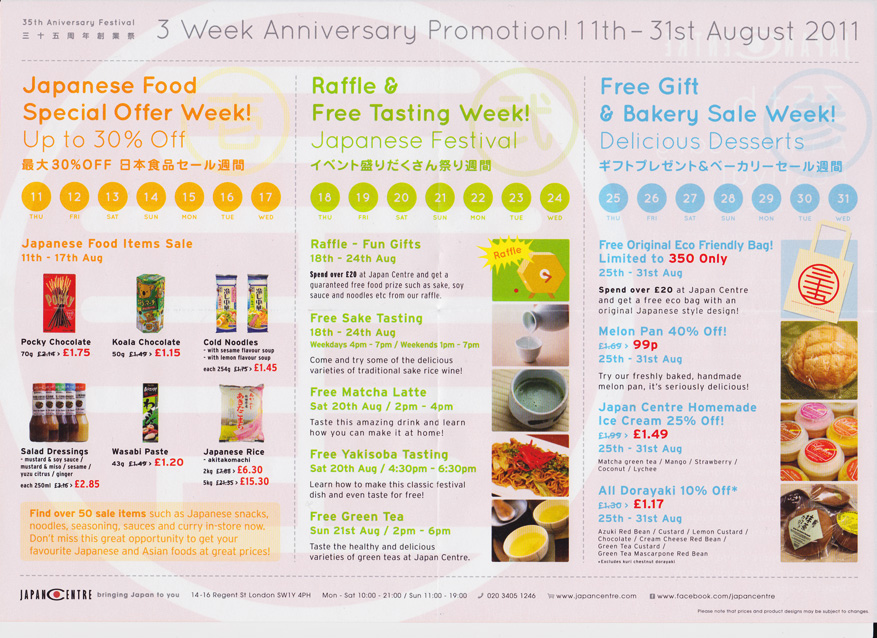
Source: Japan Centre, London
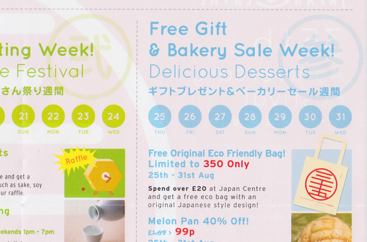
Closeup of right side of leaflet
Source: Japan Centre, London
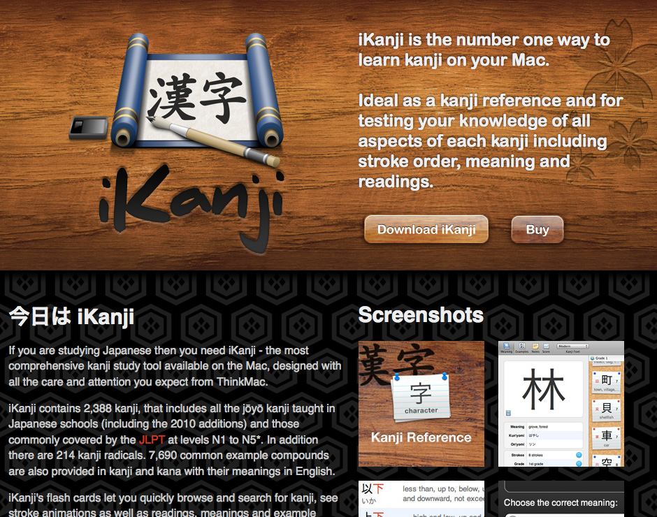
Source: Thinkmac Software
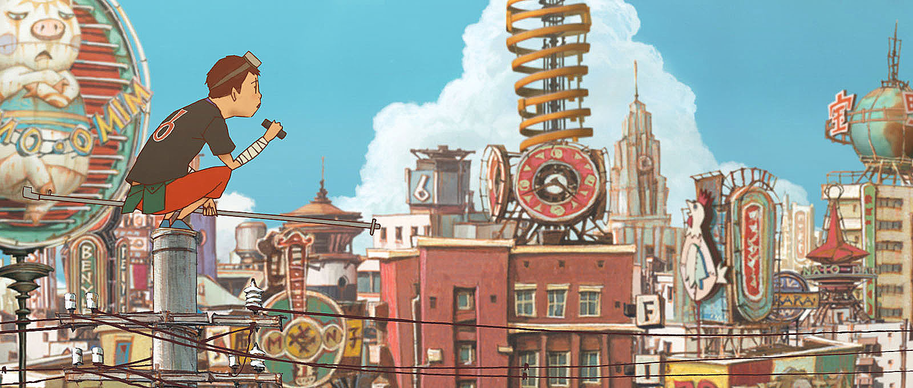
Scene from Tekkon Kinkreet,
an example of Superflat art
Image courtesy of Studio 4°C and Sony Pictures Worldwide Acquisitions Group
2) Use "safe" characters
If you find yourself in a position where you can't avoid using Japanese characters for decoration, consider limiting your character pool to relatively "safe" graphemes:
-
Japanese numbers are safe to use, and often lend themselves to graphical manipulation. The roundel on the Japan Centre leaflet is made up of the characters 三 十 and 五 (3, 10 and 5).
-
There are symbols/wingdings specific to Japanese fonts that you may be able to employ.
3) Get a native speaker to check
Wherever possible, it's helpful if someone fluent in Japanese can check your work.
Even if the language makes sense, and even if it's appropriate, there may be a more idiomatic/catchy way of saying what you want to say or doing what you want to do.
4) Learn the language
If you find yourself dealing with Japanese motifs (or clients/customers) on a regular basis, it would probably benefit you to learn some Japanese.
This not only prevents the vast majority of cockups, but allows designers to tap directly into a wealth of cultural information that can inspire future work.
ありがとうございました
Thank you!